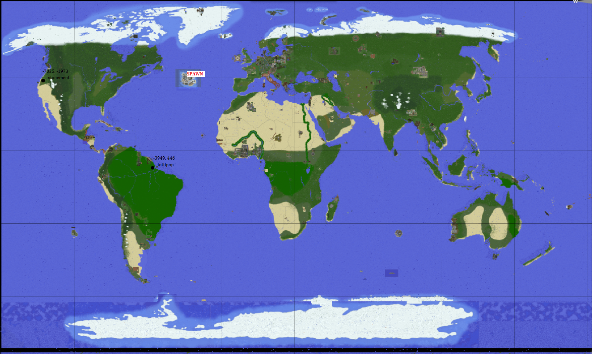
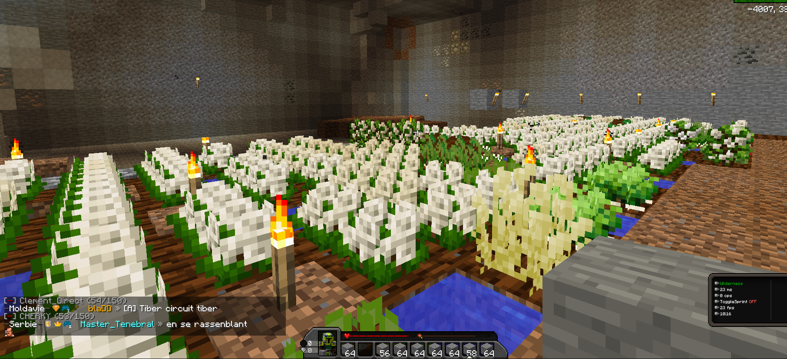
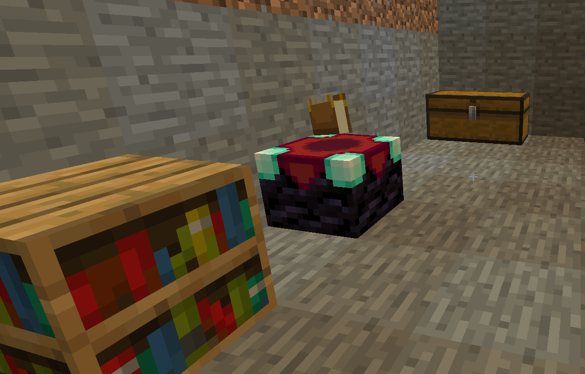

L'Union

L'Union
Union
L'union répertorie l'ensemble des kutèlemègue existants, le capital commun et individuel
ainsi que d'autres informations.
La phoshahenace est lollipop et elle est en Amérique du Sud près du point de spawn.
érimohane phoshahenace lollipop
La phoshahenace de l'Union est lollipop. Ce sera la plus grande zone aménagée, tout sera gigantesque : les salles, les escaliers, les champs,... C'est de la démesure, mais c'est possible. ⛏😪
Tout le monde est invité à participer à l'aménagement d'ampleur du champ inférieur. La salle sera géante. Pour tous ceux qui participerons, je leur offrirai dix extreme chili chacun. 🍜🧀🌾
Capital individuel
| Joueur | Rôle | Capital |
|---|---|---|
| eloan_dev | futur président | 30 000 $ |
| BlockStack | builder ; farmer | 2 500 $ |
| Tom_W | farmer | ??? $ |
| tht | farmer | ??? $ |
Plan des kutèlemègue
Cliquez sur l'image pour l'agrandir
Il y a un kutèlemègue en Amérique du Nord à proximité du point de spawn, c'est stonement : il comprend la contrabase et un champ détruit à la TNT. Il y en a un second en Amérique du Sud près du point de spawn, c'est lollipop, un endroit géant en construction qui sera l'unique base de l'Union.
Le stuff sera déplacé de la contrabase à lollipop directement : ce ne sera pas progressif. Nous devons aller vite. Planter des fruits, des légumes et des céréales dans la grande ferme, miner et enfin vendre le tout sauf la concrete et quelques autres minerais.
eloan_dev nous dit que le risque de reset n'est pas à craindre. En effet, il affirme que demander à un modérateur de réinitialiser une zone est très rare et qu'il sagit d'une décision prise pour des cas bien spécifiques comme une destruction nucléaire, hypersonique ou encore red ou anti matter ou si un pays réclame un chunk supplémentaire.
Etat des kutèlemègue
Cliquez sur l'image pour l'agrandir
Le kutèlemègue lollipop est enfin opérationnel ! Profitez d'une ferme gigantesque en constant agrandissement. Déplacez votre stuff dès maintenant et déposez le dans une salle des coffres immensément grande ! Fun fact : il y a deux coffres de l'ender dans lollipop.
On a un stock de poudre d'os conséquent : une extension pour les arbres est créée pour farmer du bois.
Cliquez sur l'image pour l'agrandir
Une table d'enchantement est disponible dans la salle des coffres. On est en train de mettre des bibliothèques autour.